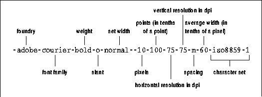
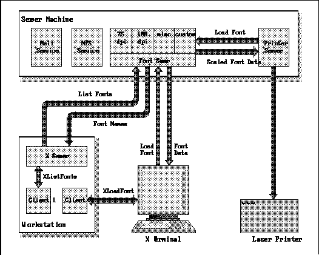

Xlib Programming Manual (O'Reilly & Associates, Inc.) |
This appendix describes how to specify fonts in application
code or in resource files. For all the details on the conventions for font
naming, see Appendix M, Logical Font Description Conventions, of
Volume Zero, X Protocol Reference Manual (as of the second printing).
The X Window System supports many different display fonts with different sizes and type styles. (These are screen fonts and are not to be confused with printer fonts.)
Since Release 3, Adobe Systems, Inc. and Digital Equipment Corporation have jointly contributed several families of screen fonts (Courier, Helvetica, New Century Schoolbook, Symbol, and Times) in a variety of sizes, styles, and weights for 75-dots-per-inch (dpi) monitors. Bitstream, Inc. contributed its Charter font family in the same sizes, styles, and weights for both 75- and 100-dpi monitors. Since Release 4, Bigelow and Holmes, Inc. and Sun Microsystems, Inc. have contributed the Lucida font family and DEC contributed a new terminal emulator font. Since Release 5, Bitstream has contributed several outline fonts to match their contributed bitmap fonts.
Fonts are stored in three directories:
| Directory | Contents |
|---|---|
| /usr/lib/X11/fonts/misc | Several fixed-width fonts, the cursor font |
| /usr/lib/X11/fonts/75dpi | Fixed- and variable-width fonts, 75 dots per inch |
| /usr/lib/X11/fonts/100dpi | Fixed- and variable-width fonts, 100 dots per inch |
These three directories (in this order) comprise X's default font path. The font path can be changed with the fp option to the xset client, as described in Volume Three, X Window System User's Guide. The font path, together with a great deal of other information about the server defaults, can be listed with xset query. All fonts in the font path can be listed with xlsfonts, and the characters in a font can be displayed on the screen with xfd.
In R5 and later, the font path can include font servers.
An application can modify the font path using XSetFontPath(), to add font directories or font servers. This should be done carefully to make sure the existing font directories are still searched.
The name of each font file in the font directories has a filename extension of .snf, which stands for server natural format. In R4, fonts were distributed in binary distribution format (bdf), which needs to be compiled (with a special font compiler) for every different architecture. In R5, fonts are distributed in portable compiled format which can be used directly on any architecture. To find out more about the various font file formats, see The X Resource, Issue 2.
The syntax of font names is defined in the X Logical Font Description convention, or XLFD. The complete XLFD is reprinted in Volume Zero, X Protocol Reference Manual. This appendix tells you the essential information, however.
If you run xlsfonts, you will get an intimidating list of names similar to the one shown in Figure A-1 which, upon closer examination, contains a great deal of useful information:
A fully specified font name

This rather verbose line is actually the name of the font stored in the file courBO10 (in the 75dpi directory). This font name specifies the foundry (Adobe), font family (Courier), weight (bold) slant (Oblique), set width (normal), size of the font in pixels (10), size of the font in tenths of a point (100, measured in tenths of a point, thus equals 10 points), horizontal resolution (75 dpi), vertical resolution (75 dpi), spacing (m, for monospace), average width in tenths of a pixel (60, measured in tenths of a pixel, thus equals 6 pixels) and character set (iso8859-1).
The meaning of many of these statistics is obvious. Some of the less obvious information is explained below:
To display text using the font stored in the file courBO10, you could use the resource setting:
Since typing a font name of this length is neither desirable nor practical, the X Window System developers have provided two alternatives: wildcarding and aliasing..yourapp*font: -adobe-courier-bold-o-normal--10-100-75-75-m-60-iso8859-1
For example, using a wildcarded font name, the resource specification above could be written:
(Note that when using wildcards with the -fn command line option, you must take care to quote the font names, since the UNIX shell has special meanings for the wildcard characters * and ?. This can be done by enclosing the entire font name in quotes or by escaping each wildcard character by typing a backslash before it.)*label: *courier-bold-o-*-100*
If more than one font in a given directory matches a wildcarded font name, the server chooses the font to use. If fonts from more than one directory match the wildcarded name, the server will always choose a font from the directory that is earlier in the font path. Thus, if a wildcarded font name matches a font from both the 75dpi and the 100dpi directories and the 75dpi directory comes first in the font path, the server chooses the font from that directory.
In creating a wildcarded font name, you need to decide which parts of the standard font name must be explicit and which parts can be replaced with wildcards. As the previous example illustrates, you can use a single wildcard character for multiple parts of the font name. For instance, the final asterisk in the example stands for the sequence:
in the explicit font name. The idea is to specify enough parts of the font name explicitly so that the server gives you the font you have in mind.-75-75-m-60-iso8859-1
It is helpful to familiarize yourself with the available font families, weights, slants, and point sizes. The following list gives these statistics for the fonts in the directories 75dpi and 100dpi in the standard X distribution from MIT. (The fonts in the misc directory are holdovers from Release 2 and have short, manageable names that should not require wildcarding.)
As a general rule, we suggest you type the following parts of a font name explicitly:
This will match either of the following two font names (the first for 75-dpi monitors and the second for 100-dpi monitors):*charter-medium-i-*-240-*
depending on which directory comes first in your font path. Specifying font size explicitly in pixels (25 for the first or 33 for the second) rather than in points would limit you to matching only one of these fonts.-bitstream-charter-medium-i-normal--25-240-75-75-p-136-iso8859-1 -bitstream-charter-medium-i-normal--33-240-100-100-p-136-iso8859-1
Given the complexity of font names and the rules of precedence used by the server, you should use wildcards carefully.
Be aware that when you create or edit a fonts.alias file, the server does not automatically recognize the aliases in question. You must make the server aware of newly created or edited alias files by resetting the font path with xset as described in Section A.2.4.
The fonts.alias file has a two-column format similar to the fonts.dir file: the first column contains aliases, the second contains the actual font names. If you want to specify an alias that contains spaces, enclose the alias in double quotes. If you want to include double quotes or other special characters as part of an alias, precede each special symbol with a backslash.
When you use an alias to specify a font in a command line, the server searches for the font associated with that alias in every directory in the font path. Therefore, a fonts.alias file in one directory can set aliases for fonts in other directories as well. You might choose to create a single aliases file in one directory of the font path to set aliases for the most commonly used fonts in all the directories. Example A-1 shows a sample fonts.alias file.
Sample fonts.alias file
As the names of the aliases suggest, this sample file contains aliases for three fonts (of different point sizes) that are easily readable in xterm windows.xterm12 -adobe-courier-medium-r-normal--12-120-75-75-m-70-iso8859-1 xterm14 -adobe-courier-medium-r-normal--14-140-75-75-m-90-iso8859-1 xterm18 -adobe-courier-medium-r-normal--18-180-75-75-m-110-iso8859-1
You can also use wildcards within the font names in the right-hand column of an alias file. For instance, the alias file above might also be written:
Once the server is made aware of aliases, you can specify an alias in resource specifications or on the command line:xterm12 *courier-medium-r-*-120* xterm14 *courier-medium-r-*-140* xterm18 *courier-medium-r-*-180*
or:xterm.font: xterm12
If you want each font name to be equivalent to the name of the file in which it is stored, without the .snf extension, you can use alias files. In each directory in the font path, create a fonts.alias file containing only the following line:xterm -fn xterm12
Each filename (without the .snf extension) will then serve as an alias for the font the file contains. Note that an alias file containing this line applies only to the directory in which it is found. To make every font name equivalent to the name of the file in which it is stored, you need to create a fonts.alias file such as this in every font directory.FILE_NAMES_ALIASES
If you have specified FILE_NAMES_ALIASES in an alias file, you can choose the fonts in that directory by means of their filenames, as we did in the resource example at the end of Chapter 2, "X Concepts."
on the command line. The xset option fp (font path) with the rehash argument causes the server to reread the fonts.dir and fonts.alias files in the current font path. You need to do this every time you edit an alias file. (You also need to use xset if you add or remove fonts. See Volume Three, X Window System User's Guide, for details.)xset fp rehash
Each fonts.dir file contains a list of all the font files in the directory with their associated font names in two-column form. (The first column lists the font file and the second column lists the actual font name associated with the file.) The first line in fonts.dir lists the number of entries in the file (i.e., the number of fonts in the directory).
Example A-2 shows the fonts.dir file from the directory /usr/lib/X11/fonts/100dpi. As the first line indicates, the directory contains 24 fonts.
fonts.dir file in /usr/lib/X11/fonts/100dpi
The fonts.dir files are created by the mkfontdir client when X is installed. mkfontdir reads the font files in directories in the font path, extracts the font names, and creates a fonts.dir file in each directory. If fonts.dir files are present on your system, you probably will not have to deal with them or with mkfontdir at all. If the files are not present or if you have to load new fonts or remove existing ones, you will have to create files with mkfontdir. See Volume Three, X Window System User's Guide, for details.24 charBI08.snf -bitstream-charter-bold-i-normal--11-80-100-100-p-68-iso8859-1 charBI10.snf -bitstream-charter-bold-i-normal--14-100-100-100-p-86-iso8859-1 charBI12.snf -bitstream-charter-bold-i-normal--17-120-100-100-p-105-iso8859-1 charBI14.snf -bitstream-charter-bold-i-normal--19-140-100-100-p-117-iso8859-1 charBI18.snf -bitstream-charter-bold-i-normal--25-180-100-100-p-154-iso8859-1 charBI24.snf -bitstream-charter-bold-i-normal--33-240-100-100-p-203-iso8859-1 charB08.snf -bitstream-charter-bold-r-normal--11-80-100-100-p-69-iso8859-1 charB10.snf -bitstream-charter-bold-r-normal--14-100-100-100-p-88-iso8859-1 charB12.snf -bitstream-charter-bold-r-normal--17-120-100-100-p-107-iso8859-1 charB14.snf -bitstream-charter-bold-r-normal--19-140-100-100-p-119-iso8859-1 charB18.snf -bitstream-charter-bold-r-normal--25-180-100-100-p-157-iso8859-1 charB24.snf -bitstream-charter-bold-r-normal--33-240-100-100-p-206-iso8859-1 charI08.snf -bitstream-charter-medium-i-normal--11-80-100-100-p-60-iso8859-1 charI10.snf -bitstream-charter-medium-i-normal--14-100-100-100-p-76-iso8859-1 charI12.snf -bitstream-charter-medium-i-normal--17-120-100-100-p-92-iso8859-1 charI14.snf -bitstream-charter-medium-i-normal--19-140-100-100-p-103-iso8859-1 charI18.snf -bitstream-charter-medium-i-normal--25-180-100-100-p-136-iso8859-1 charI24.snf -bitstream-charter-medium-i-normal--33-240-100-100-p-179-iso8859-1 charR08.snf -bitstream-charter-medium-r-normal--11-80-100-100-p-61-iso8859-1 charR10.snf -bitstream-charter-medium-r-normal--14-100-100-100-p-78-iso8859-1 charR12.snf -bitstream-charter-medium-r-normal--17-120-100-100-p-95-iso8859-1 charR14.snf -bitstream-charter-medium-r-normal--19-140-100-100-p-106-iso8859-1 charR18.snf -bitstream-charter-medium-r-normal--25-180-100-100-p-139-iso8859-1 charR24.snf -bitstream-charter-medium-r-normal--33-240-100-100-p-183-iso8859-1
Ideally, the site administrator could simply place fonts in a directory of a networked file system that is accessible to all hosts at the site. Unfortunately, no binary format for font data has been standardized, and the X servers supplied by different vendors expect data in mutually incompatible formats. If a vendor wishes to support several font formats, the server must include code to parse each one.
R5 provides an elegant solution to these problems in the form of a networked font service. Under this new model, an X server can obtain font data in a simple bitmap format from a font server process running somewhere on the network. The font server does the work of parsing font files for any supported format and exports font data in a bitmap format standardized by the X Font Service Protocol (reprinted in Volume Zero, X Protocol Reference Manual as of late 1992). X servers that take advantage of font service no longer need to do the work of parsing fonts themselves. In the near future, however, it is likely that workstation-based X servers and X terminals will continue to support file-based fonts along with their support for font servers.
The Font Service Protocol was designed by Jim Fulton of Network Computing Devices. The font server in the MIT distribution was implemented primarily by Dave Lemke, also of NCD. In addition, Apple Computer has donated a font server (which runs only on the Apple Macintosh computer) to export the Apple bitmap fonts, and, if available, the Apple TrueType fonts as well.
Typically, a font server will run on one host per site and will export all the fonts available at the site, but there are a variety of other ways that font service can be configured. A large site may choose to have multiple font servers to prevent overloading of a single server or to protect against service outages caused by network trouble or server crashes. A font server could export fonts parsed from a variety of formats, or a separate server could be used for each format. A vendor of fonts with a custom format might provide a special font server to export those fonts, and might use the special server to implement licensing policies--restricting the maximum number of simultaneous users of a font, for example. Finally, note that in the terminology of X font service, the X server is a font client, and that it is perfectly legal to have other font clients such as printer drivers. Figure A-2 shows a font server providing service to a workstation, an X terminal, and a printer driver.
A typical font server configuration

R5 font service and scalable font support consists of the following components:
where the optional catalogue-list is a list of catalogue names separated with plus signs.tcp/hostname:port-number[/catalogue-list]
A font server that runs on a DECnet network is named as follows:
Example A-3 shows various font paths that might be set in order to use a font server running on the host "ora-server."decnet/nodename::font$objname[/catalogue-list]
X font paths containing font servers
Naming a font server is conceptually the same as naming an X display, but obviously the naming schemes used are very different. When naming an X server, a TCP/IP connection is distinguished from a DECnet connection solely by the number of colons that separate the hostname from the display number, and this scheme is not elegantly extensible to other network technologies in the future. Furthermore, an X server communicates over a port which is a relative offset (the display number) from a "hardcoded" base port number, but base port numbers cannot simply be allocated; they must be assigned by the powers that be in the network world. Font server names specify an absolute port number, rather than a relative number. The default is 7000 as in Example A-3, but this can easily be overridden (it is a command-line option) if it conflicts with other services or even other font servers. If X were rewritten today, display names would probably be just like font server names: they would explicitly specify the network type and absolute port number.tcp/ora-server:7000 tcp/ora-server:7000/75dpi, /usr/lib/X11/fonts/misc tcp/ora-server:7000/100dpi+misc, /usr/lib/X11/fonts/misc tcp/ora-server:7000/100dpi+misc, tcp/ora-server:7001/new-fonts
The forthcoming O'Reilly & Associates book on X administration will cover font server configuration in more detail.#define InstallFSConfig YES
The R5 distribution from MIT also includes a font server
for the Apple Macintosh which will export Apple bitmap fonts (and Apple
TrueType fonts if they are available) to X servers on the network. The
source code for this server is in mit/fonts/server/MacFS and will
only build on a Macintosh running A/UX. The README file in this
directory provides minimal documentation on building and configuring the
server. Note that the fonts themselves are not part of the R5 distribution;
these must exist on the Macintosh that will be exporting them.
Until Release 5, X relied exclusively on non-scalable bitmap fonts. If there was no installed font in the point size and resolution you wanted, then you were out of luck--it is obviously not feasible to provide every font in every point size and for every possible resolution. Bitmap fonts do not scale well, because their pixel-by-pixel specification can only be made smaller by omitting pixels or made larger by making pixels bigger, resulting in a jagged, low-resolution font. The fonts shipped by MIT for Release 5 include several "outline fonts" which describe characters by their component curves rather than by individual pixels. This description allows for successful scaling to any desired point size and resolution. The font server shipped by MIT in Release 5 has the capability to read and scale these outline fonts, and therefore the number of fonts available to the user is greatly increased. (Note, however, that a good bitmap font that is "hand-tuned" to a particular point size and screen resolution will generally be better looking than an outline font scaled to that size and resolution. Font design is an art, and the human touch is still important.)
The following two sections apply equally to all scalable and scaled fonts, whether outline or bitmap, from the X server or the font server.
These seemingly contradictory goals are resolved by changing the semantics of the call to XListFonts() and by extending the X Logical Font Description Conventions slightly. In R5, scalable fonts are returned by XListFonts() with the string "0" in the PIXEL_SIZE, POINT_SIZE, and AVERAGE_WIDTH fields (the seventh, eighth, and twelfth fields of the 14-field XLFD font name). Non-scalable fonts will never have these three fields zero, and therefore these fields are sufficient to distinguish scalable from non-scalable fonts. Most font servers will list a few specific derived instances of each scalable font at standard sizes and resolutions for the benefit of older X applications that expect to find font names in this form.
The X server and font server are only required to match scalable fonts when the font name pattern they are passed is a well-formed one. A well-formed font name is one that contains all 14 hyphens specified in the XLFD convention. Wildcards are permitted for any field, but may not replace multiple fields--all fields must be present in the name. For example,
is not a well-formed name, but*-helvetica-bold-o-*-*-*-120-*
is well-formed. Shortcut names specified as in the first example have come into common use, but with the increasing variety of display resolutions and fonts with non-standard charsets, it is good practice to specify these extra fields, even if you are not interested in using scaled fonts. If XListFonts() is passed a pattern that is not well-formed, it may not include scalable fonts in the search at all.-*-helvetica-bold-o-*-*-*-120-75-75-*-*-iso8859-1
To list scalable fonts, call XListFonts() with a well-formed pattern with "0" or "*" in its PIXEL_SIZE, POINT_SIZE, and AVERAGE_WIDTH fields. Example A-4 shows some queries that will return scalable fonts. You can quickly try them out by replacing the call to XListFonts() with the client xlsfonts.
Listing scalable fonts
/* List all Latin-1 fonts. Returned names of scalable fonts will have * "0" for pixel size, point size, and average width */ fonts = XListFonts(dpy, "-*-*-*-*-*-*-*-*-*-*-*-*-iso8859-1", 1000, &count); /* List all scalable courier fonts. Non-scalable fonts will * not be listed. */ list = XListFonts(dpy,"-*-courier-*-*-*-*-0-0-*-*-*-0-*-*", 200, &count);
When searching for fonts at a particular size, you will typically wildcard the pixel size and average width by setting those fields to "*" and explicitly specify the point size you want along with the x- and y-resolutions of your screen. (You can calculate screen resolutions with macros like DisplayWidth() and DisplayWidthMM(), as shown in a later example.) These three fields specify all that is needed to correctly scale the font. You need not (and should not) specify the pixel size, because the point size and y-resolution of the screen determine the desired pixel size. You need not specify the average width because the point size and x-resolution of the screen, together with the height to width ratio implicit to the font, determine the desired width. It is also possible to name a single derived instance of a scalable font by specifying a pixel size plus x- and y-resolutions. There are also other combinations of fields that will work, but none are particularly useful in practice. Example A-5 shows font name patterns that will match derived instances of scalable fonts.
Finding derived instances of scalable fonts
There are a number of reasons that a font name pattern could fail to match derived instances of scalable fonts. It is difficult to devise an algorithm that will correctly match scalable fonts against any font name pattern. For this reason, the X server or font server is not required to include scalable fonts in its search if the pattern it is given is not well-formed. A well-formed pattern must contain 14 hyphens. Note in particular that the first character in a well-formed name must be a hyphen./* Load a 12-point bold helvetica font defined at a 100x100 dpi * resolution. The actual font loaded might be a derived instance of a * scalable font, or it might be a bitmap font--there is no way to * distinguish them. */ font = XLoadFont(dpy, "-*-helvetica-bold-r-*-*-*-120-100-100-*-*-iso8859-1"); /* Load a 20 pixel high helvetica font defined at 100x100 dpi */ font2 = XLoadFont(dpy, "-*-helvetica-medium-r-*-*-20-*-100-100-*-*-iso8859-1"); /* List all 13-point Latin-1 helvetica fonts defined at a 106x97 dpi * resolution. This pattern will match derived instances of scalable * fonts, and will probably only match derived instances of scalable * fonts, because there are not likely to be bitmap fonts defined at this * particular size and resolution. */ list = XListFonts(dpy,"-*-helvetica-*-*-*-*-*-130-106-97-*-*-iso8859-1", 50, &count);
An underspecified font name will not match any derived instances of scalable fonts. This is because your font name could match any number of derived instances, and it is not possible to list them all. When only the point size and pixel size are specified, for example, they are enough together to determine the desired y-resolution for the font, but any x-resolution (and therefore any average width) is still possible. To uniquely match a derived instance, you'd have to specify the x-resolution of your screen or a desired average width for the font. The MIT implementation, however, makes reasonable guesses for unspecified resolution values, so underspecified font names do not occur. If only point size is specified, then default resolutions (75 or 100 dpi) are used. If both point and pixel size are specified as above, then the y-resolution they specify is used for both x- and y-resolution fields.
Similarly, an overspecified font name, one with point size, pixel size, and x- and y-resolutions, for example, may not match any derived instances of scalable fonts: if the specified y-resolution is different from the y-resolution implicitly defined by the combination of point size and pixel size, then there is no way that the font can be scaled to satisfy your request. Example A-6 shows font name patterns that will fail to match any derived instances of scalable fonts.
Font name patterns that don't match scaled fonts.
/* List 15-point bold oblique helvetica fonts. Derived instances of * scalable fonts will probably not be included in the list because the * pattern does not have all 14 fields. */ helvbold15 = XListFonts(dpy,"*-helvetica-bold-o-*-*-*-150-*", 50, &count); /* List all 17-point, 17-pixel bold oblique helvetica fonts defined at * 100dpi x- and y-resolutions. This pattern will not match any derived * instances of scalable fonts (nor any font) because a 17 point font * at 100dpi is not 17 pixels high. */ helvbold17 = XListFonts(dpy,"-*-helvetica-bold-o-*-*-17-170-100-100-*-*- iso8859-1",50, &count);
Example A-7 shows a procedure that determines whether or not a given font name represents a scalable font. This procedure is intended to be called once for each font returned by XListFonts().
Determining if a font is scalable
/*
* This routine returns True if the passed name is a well-formed
* XLFD style font name with a pixel size, point size, and average
* width (fields 7,8, and 12) of "0".
*/
Bool IsScalableFont(name)
char *name;
{
int i, field;
if ((name == NULL) || (name[0] != '-')) return False;
for(i = field = 0; name[i] != '\0'; i++) {
if (name[i] == '-') {
field++;
if ((field == 7) || (field == 8) || (field == 12))
if ((name[i+1] != '0') || (name[i+2] != '-'))
return False;
}
}
if (field != 14) return False;
else return True;
}
Example A-8 shows a procedure that takes a scalable font
name and a desired point size and loads the derived instance of that font
at the requested size and at the precise resolution of the screen. It is
intended to be called with a scalable font name as returned by XListFonts().
Loading a derived instance of a scalable font
/*
* This routine is passed a scalable font name and a point size. It returns
* an XFontStruct for the given font scaled to the specified size and the
* exact resolution of the screen. The font name is assumed to be a
* well-formed XLFD name, and to have pixel size, point size, and average
* width fields of "0" and arbitrary x-resolution and y-resolution fields.
* Size is specified in tenths of points. Returns NULL if the name is
* malformed or no such font exists.
*/
XFontStruct *LoadQueryScalableFont(dpy, screen, name, size)
Display *dpy;
int screen;
char *name;
int size;
{
int i,j, field;
char newname[500]; /* big enough for a long font name */
int res_x, res_y; /* resolution values for this screen */
/* catch obvious errors */
if ((name == NULL) || (name[0] != '-')) return NULL;
/* calculate our screen resolution in dots per inch. 25.4mm = 1 inch */
res_x = DisplayWidth(dpy, screen)/(DisplayWidthMM(dpy, screen)/25.4);
res_y = DisplayHeight(dpy, screen)/(DisplayHeightMM(dpy, screen)/25.4);
/* copy the font name, changing the scalable fields as we do so */
for(i = j = field = 0; name[i] != '\0' && field <= 14; i++) {
newname[j++] = name[i];
if (name[i] == '-') {
field++;
switch(field) {
case 7: /* pixel size */
case 12: /* average width */
/* change from "-0-" to "-*-" */
newname[j] = '*';
j++;
if (name[i+1] != '\0') i++;
break;
case 8: /* point size */
/* change from "-0-" to "-<size>-" */
sprintf(&newname[j], "%d", size);
while (newname[j] != '\0') j++;
if (name[i+1] != '\0') i++;
break;
case 9: /* x-resolution */
case 10: /* y-resolution */
/* change from an unspecified resolution to res_x or res_y */
sprintf(&newname[j], "%d", (field == 9) ? res_x : res_y);
while(newname[j] != '\0') j++;
while((name[i+1] != '-') && (name[i+1] != '\0')) i++;
break;
}
}
}
newname[j] = '\0';
/* if there aren't 14 hyphens, it isn't a well formed name */
if (field != 14) return NULL;
return XLoadQueryFont(dpy, newname);
}
Xlib Programming Manual (O'Reilly & Associates, Inc.) |